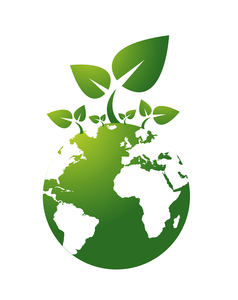

Welche Richtlinien werden von der EU vorgeschrieben? Und vom Staat ( BRD )
• Einrichtung von Umweltzonen ( grüne, gelbe, rote Umweltplaketten )
• Kraftstoff E 10 ( Biokraftstoff )
• Abwrackprämie für alte Autos
• Geschwindigkeitsbegrenzungen auch gegen Lärmbelästigung
• Energiesparlampen
• Umweltauflagen gegen CO 2Emissionen
• Unterstützung alternativer Energien
• Solarenergie
• Windenergie
• Biogasanlagen
Deutschland ist nun aber Vorreiter für die „grüne Politik“: man entwickelt neue Windräder und stellt sie auf; dadurch entstehen Arbeitsplätze in der Umweltindustrie. In Deutschland haben die gefährlichen Atomkraftwerke eine Begrenzung der Laufzeit. Stattdessen setzt man auf Sonnenenergie. Auch hier entstehen immer mehr Arbeitsplätze für die Herstellung und den Einbau von Solarzeller auf Dächern etc. Auch der Bau von Häuser, die auf Energieeffizienz setzen, ist eine ganz neue Entwicklung: man braucht immer weniger Energie für Dämmung.
Wie kann ich die Umwelt schützen?
1. beim lüften Heizung abschalten
2. bei kurzen Strecken laufen oder Fahrrad benutzen
3. Energiesparlampen einsetzen
4. Photovoltaikanlage auf dem Dach anbringen
5. Wenn möglich, öffentliche Verkehrsmittel verwenden
6. mit Restwärme beim Backen und Kochen
7. so wenig Plastik wie möglich einsetzen
8. beim Hausbau eine optimale Wärmedämmung verwenden
9. Bei Geräte keine Stand-By Funktion
10. Abfall im Abfalleimer entsorgen und nicht in der Umwelt
11. Deckel beim Kochen drauf
12. Umweltplakette beim Auto
13. begrenzte Duschzeit
14. beim Zähneputzen Wasserhahn nicht laufen lassen
15. im Garten eine Wassertonne als Auffangbecken

Was tut der Staat (Europa) für den Umweltschutz?
1. Umweltplaketten bei Autos
2. Atomkraftwerke stilllegen
3. Die Forschung durch Finanzspritzen fördern
4. Umweltfreundliche, alternative Antriebsvarianten beim Automobil z. B. Strom zu entwickeln CO² Emissionen verringern
5. Klimakonferenzen abhalten
6. Grenzwerte festlegen und sie überprüfen
7. Wasserkraft- und Windkraftwerke
8. Solaranalgen steuerlich begünstigen
Welche Umweltorganisationen gibt es?/
1. Greenpeace
2. WWF - World Wildlife Fund
3. WWF - Deutschland
4. EuroNatur
5. Global2000
6. NABU - Naturschutzbund Deutschland e.V.
7. BUND - Bund für Umwelt und Naturschutz Deutschland e.V.
8. Robin Wood
9. Sea Shepherd
10. Earth First!
11. Rettet den Regenwald e.V.